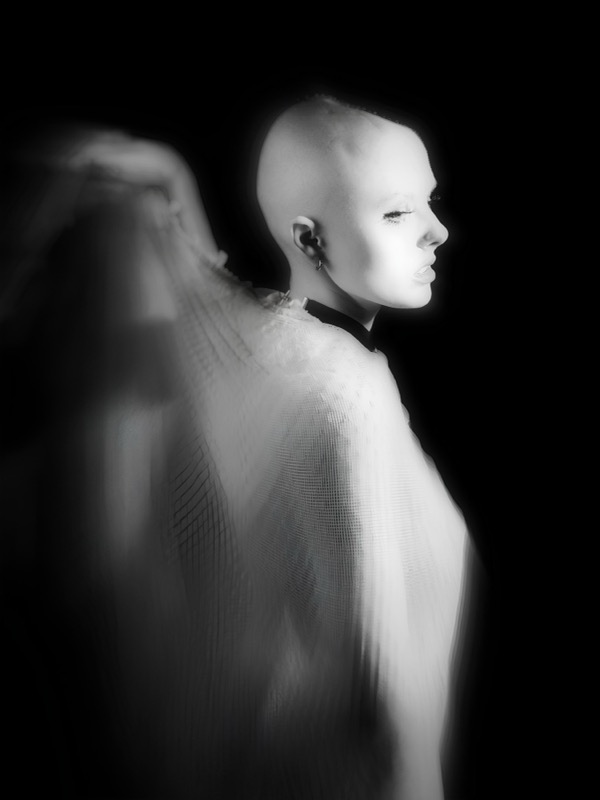
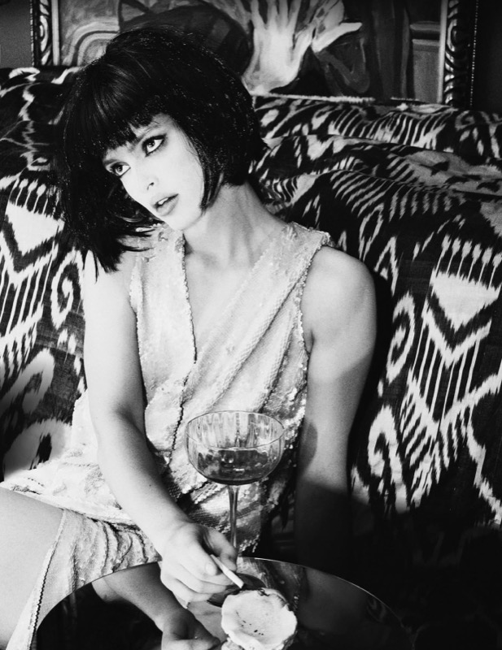

Заголовки разделов — семь решений
Строка над галереей: «Портреты», «Улица», «Пары», а также «Прайс» и «Как проходит съёмка». Первым идёт нынешний вид — для сравнения, он под серым номером. Дальше семь вариантов: меняются шрифт, кегль, яркость и место. Фотографии под каждым заголовком настоящие, чтобы масштаб читался в контексте. Назовите номер.
Исходное состояние — для сравнения. Крупно, по центру, в полный тон.



Тот же шрифт и то же место, но вдвое мельче и приглушённее. Заголовок перестаёт спорить с фотографиями и работает как подпись к развороту.
Раздел уже назван в меню, и там он подсвечен. Строка просто исчезает, фотографии начинаются сразу под шапкой. Самый минималистичный ход.
Мелко и прижато к левому полю — ровно в ту вертикаль, где начинается первый кадр. Заголовок превращается в служебную метку, а не в вывеску.
Тот же шрифт, что в имени «SOFIA FILATOVA» наверху. Строчные буквы вместо капслока: мягче и дороже, но это второй шрифт на странице.
Заголовок остаётся крупным, но теряет капслок и разрядку — именно они и делали его тяжёлым. Прижат влево, как в референсе.
Мелкая строка, но с фактом вместо голого названия. Заодно сообщает, сколько всего работ в разделе.
Отдельной строки нет вовсе: название раздела уходит в шапку, к имени. Экономит целую строку сверху, но заметить его труднее.